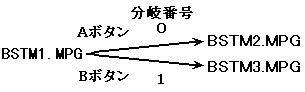

★PROGRAMMER'S GUIDE
★分岐再生ライブラリ
★PROGRAMMER'S GUIDE
★分岐再生ライブラリ
図5.1 分岐再生のシナリオ例

#define BSTM_MAX 3 /* 分岐ストリームの総数
(BSTM1.MPG, BSTM2.MPG, BSTM3.MPG) */
#define BRANCH_MAX 2 /* 分岐の総数（図５．１の矢印の数） */
#define KEY_MAX 2 /* ストリームキーの種類の総数 */
#define A_BTN 0 /* Ａボタンの分岐番号 */
#define B_BTN 1 /* Ｂボタンの分岐番号 */
#define BR_NUM 2 /* ストリーム当たりの分岐数 */
#define BSTM1_ID 0 /* BSTM1.MPGの分岐ストリーム識別子 */
#define BSTM2_ID 1 /* BSTM2.MPGの分岐ストリーム識別子 */
#define BSTM3_ID 2 /* BSTM3.MPGの分岐ストリーム識別子 */
/* 分岐再生ライブラリの作業領域 */
Sint32 work_bpl[BPL_WORK_SIZE(BSTM_MAX, BRANCH_MAX, KEY_MAX)/sizeof(Sint32)];
void setScenario(void)
{
StmKey key[KEY_MAX]; /* ストリームキーを設定するための領域 */
Sint32 brtbl[BR_NUM]; /* 分岐先を設定するための領域 */
Sint32 fid; /* ファイル識別子 */
/* 分岐再生の初期化 */
BPL_Init(BSTM_MAX, BRANCH_MAX, KEY_MAX, work_bpl);
/* 分岐ストリーム情報の設定 */
STM_KEY_CN(key + 0) = STM_KEY_CIMSK(key + 0) = STM_KEY_NONE;
STM_KEY_CN(key + 1) = STM_KEY_CIMSK(key + 1) = STM_KEY_NONE;
STM_KEY_SMMSK(key + 0) = STM_KEY_SMVAL(key + 0) = STM_SM_VIDEO;
STM_KEY_SMMSK(key + 1) = STM_KEY_SMVAL(key + 1) = STM_SM_AUDIO;
fid = GFS_NameToId("BSTM1.MPG");
BPL_SetStmInfo(BSTM1_ID, fid, KEY_MAX, key);
fid = GFS_NameToId("BSTM2.MPG");
BPL_SetStmInfo(BSTM2_ID, fid, KEY_MAX, key);
fid = GFS_NameToId("BSTM3.MPG");
BPL_SetStmInfo(BSTM3_ID, fid, KEY_MAX, key);
/* 分岐先情報の設定 */
brtbl[A_BTN] = BSTM2_ID; /* Ａボタンが押されたらBSTM2.MPGに分岐する */
brtbl[B_BTN] = BSTM3_ID; /* Ｂボタンが押されたらBSTM3.MPGに分岐する */
BPL_SetBranchInfo(BSTM1_ID, BR_NUM, brtbl); /* BSTM1.MPGの分岐先の設定 */
}
Sint32 work_gfs[GFS_WORK_SIZE(BSTM_MAX*KEY_MAX)/sizeof(Sint32)];
Sint32 work_stm[STM_WORK_SIZE(GRP_MAX, BSTM_MAX*KEY_MAX)/sizeof(Sint32)];
Sint32 brno; /* 分岐番号 */
StmHn stmtbl[KEY_MAX]; /* ストリームハンドルのテーブル */
Sint32 bpl_stat; /* 分岐再生状態 */
Sint32 decode_stat; /* デコーダの動作状態 */
DecodeHn dc_hn = NULL; /* デコーダのハンドル */
Bool chgsw = OFF; /* 分岐実行スイッチ */
Bool endflag = FALSE;
Sint32 ret;
/* 各ライブラリの初期化 */
GFS_Init(・・・); /* ファイルシステムの初期化 */
STM_Init(・・・); /* ストリームシステムの初期化 */
initDecoder(); /* デコーダの初期化 */
setScenario(); /* シナリオの設定（５．１を参照） */
/* 分岐再生 */
BPL_SetStart(BSTM1_ID); /* 再生開始ストリームの指定 */
BPL_GetCurStm(KEY_MAX, stmtbl); /* 最初の分岐ストリームの取得 */
dc_hn = createDecodeHn(stmtbl); /* デコーダのハンドルの作成 */
while (endflag == FALSE) {
bpl_stat = BPL_ExecServer(chgsw); /* 分岐再生サーバの実行 */
chgsw = OFF;
STM_ExecServer(); /* ストリームサーバの実行 */
decode_stat = execDecoder(dc_hn); /* デコーダのサーバ関数の実行 */
switch (bpl_stat) {
case BPL_SVR_COMPLETED: /* 分岐再生終了状態 */
endflag = TRUE;
break;
case BPL_SVR_WAITSEL: /* 分岐先選択待ち状態 */
/* パッド入力の取得 (0：Aボタン, 1：Bボタン, 負の場合：入力がない */
brno = getPadEvent();
if (brno >= 0) {
BPL_SelectBranch(brno); /* 分岐先の選択 */
}
break;
case BPL_SVR_SELECT: /* 分岐先決定状態 */
case BPL_SVR_NOBRN: /* 分岐先なし状態 */
if (decode_stat != COMPLETED) { /* デコード完了のチェック */
break;
}
chgsw = ON; /* 分岐実行スイッチON */
ret = BPL_GetNextStm(KEY_MAX, stmtbl); /* 分岐先のストリームの取得 */
if (ret >= 0) { /* 分岐先がある場合 */
destroyDecodeHn(dc_hn); /* デコーダのハンドルの消去 */
dc_hn = createDecodeHn(stmtbl); /* デコーダのハンドルの作成 */
}
break;
}
}
destroyDecodeHn(dc_hn); /* デコーダのハンドルの消去 */
★PROGRAMMER'S GUIDE
★分岐再生ライブラリ